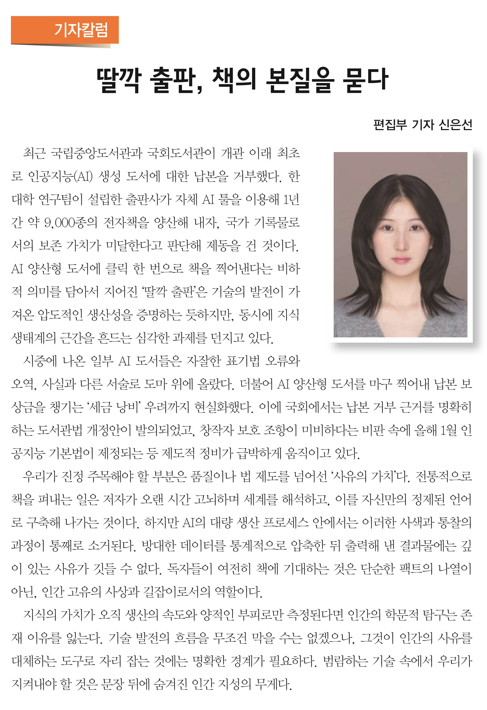
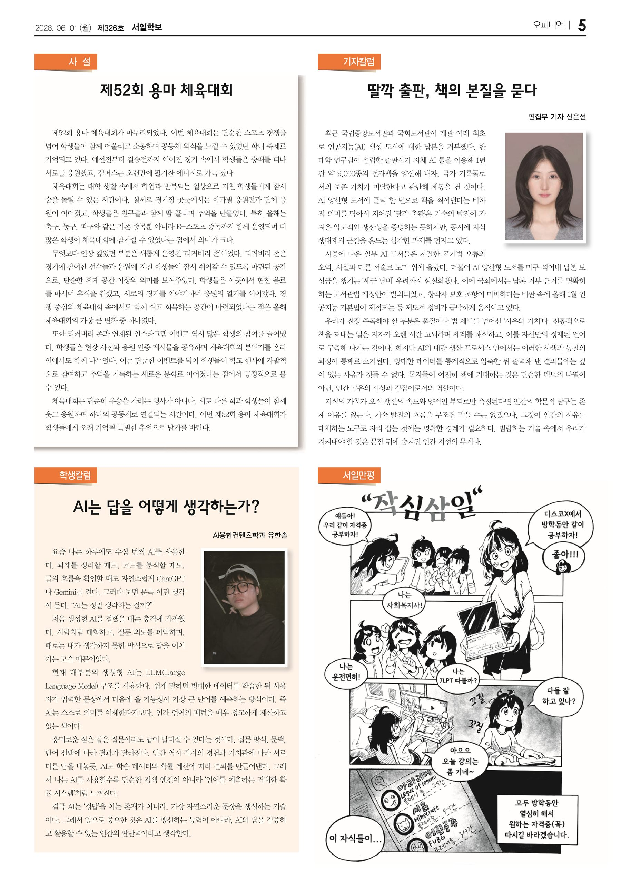

딸깍 출판, 책의 본질을 묻다
지면에서 옮긴 텍스트예요 · 사진과 레이아웃은 ‘지면으로 보기’에서 볼 수 있어요
최근 국립중앙도서관과 국회도서관이 개관 이래 최초로 인공지능(AI) 생성 도서에 대한 납본을 거부했다. 한 대학 연구팀이 설립한 출판사가 자체 AI 툴을 이용해 1년간 약 9,000종의 전자책을 양산해 내자, 국가 기록물로서의 보존 가치가 미달한다고 판단해 제동을 건 것이다. AI 양산형 도서에 클릭 한 번으로 책을 찍어낸다는 비하적 의미를 담아서 지어진 ‘딸깍 출판’은 기술의 발전이 가져온 압도적인 생산성을 증명하는 듯하지만, 동시에 지식 생태계의 근간을 흔드는 심각한 과제를 던지고 있다.
시중에 나온 일부 AI 도서들은 자잘한 표기법 오류와 오역, 사실과 다른 서술로 도마 위에 올랐다. 더불어 AI 양산형 도서를 마구 찍어내 납본 보상금을 챙기는 ‘세금 낭비’ 우려까지 현실화했다. 이에 국회에서는 납본 거부 근거를 명확히 하는 도서관법 개정안이 발의되었고, 창작자 보호 조항이 미비하다는 비판 속에 올해 1월 인공지능 기본법이 제정되는 등 제도적 정비가 급박하게 움직이고 있다.
우리가 진정 주목해야 할 부분은 품질이나 법 제도를 넘어선 ‘사유의 가치’다. 전통적으로 책을 펴내는 일은 저자가 오랜 시간 고뇌하며 세계를 해석하고, 이를 자신만의 정제된 언어로 구축해 나가는 것이다. 하지만 AI의 대량 생산 프로세스 안에서는 이러한 사색과 통찰의 과정이 통째로 소거된다. 방대한 데이터를 통계적으로 압축한 뒤 출력해 낸 결과물에는 깊이 있는 사유가 깃들 수 없다. 독자들이 여전히 책에 기대하는 것은 단순한 팩트의 나열이 아닌, 인간 고유의 사상과 길잡이로서의 역할이다.
지식의 가치가 오직 생산의 속도와 양적인 부피로만 측정된다면 인간의 학문적 탐구는 존재 이유를 잃는다. 기술 발전의 흐름을 무조건 막을 수는 없겠으나, 그것이 인간의 사유를 대체하는 도구로 자리 잡는 것에는 명확한 경계가 필요하다. 범람하는 기술 속에서 우리가 지켜내야 할 것은 문장 뒤에 숨겨진 인간 지성의 무게다.
지면을 누르면 크게 볼 수 있어요


Full page
칼럼이 실린 서일학보 제326호 5면 전체 지면이에요. 누르면 크게 볼 수 있어요.